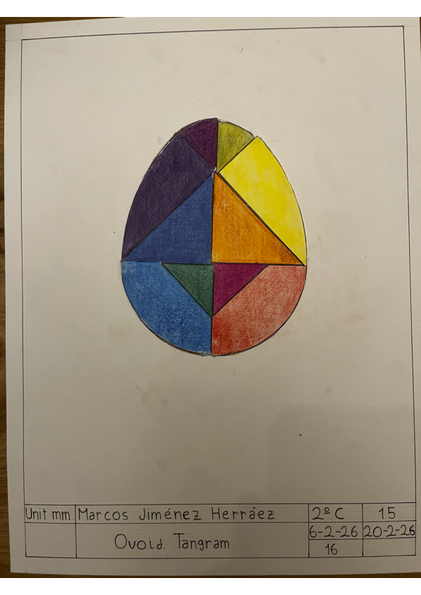

Making an ovoid and a tangram with it.
1. Firstly, I made a segment of 115mm diameter and made it a segment bisector, geting the center, which is called O1.
2. A is gooing to be named O3 and B O4. Make a circumference from O1 to A.
3. Make a line from A and B to O2. make a circle with O2 with a radius as big as it touches the previous made lines.
4. To make the ovoid, from O1 make a semicircle from A to B, then from B to A until it touches the small circumference and repeat from A. Then, from O2 to the parts made before.
5. Finally I made a presentation with it. This is the link: https://canva.link/il2wyprq04jyoqm
In this activity I have learned how to make an ovoid and a tangram with it.